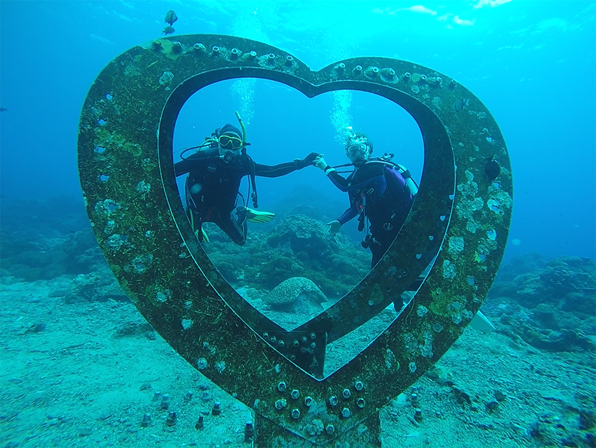
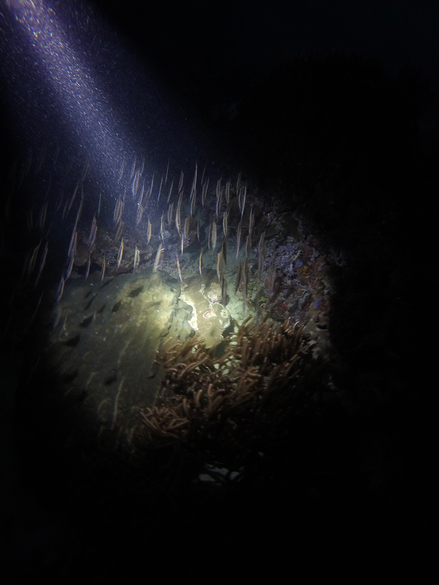
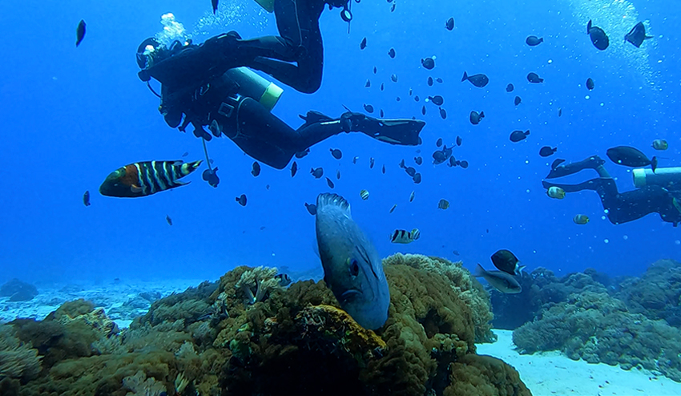
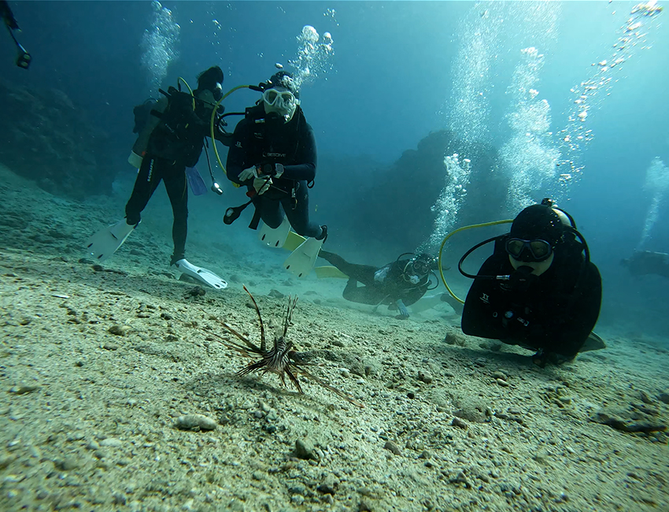
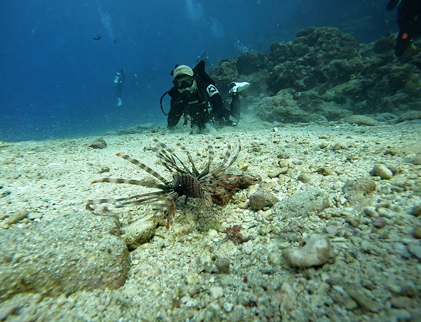

為了因應年底想出國潛水，且外國潛水店家針對證照看管非常嚴謹，因此為了補足我的進階潛水執照(AOW.Advance Open Water)的授權，只好跟教練報考授權考試課，這次上課以及考試的地點選擇了位於台灣東南方外島：綠島。
綠島是台灣東南方的一個小島，除了過往有著名監獄外，時至今日也是一個國家級風景區，有著豐富的海洋生態和自然景觀，當然現在島上也有永居住民，有賴於網路的發達，生活圈習慣與資訊也跟本島並沒有太大差異。雖然是到綠島島嶼上，但這次的島嶼行程除了睡覺以外的時間，幾乎都是在海上或海底，所以還是說說有關綠島的海底景色吧！
為了鼓勵海事活動，綠島石朗除了有設立保育區欲維持海底生態保持外，也有設置海底郵筒，這是一般旅客前往綠島參與陸上行動所無法接觸的景色，當然這郵筒是真的有在運作，所以當導潛教練有提前告知行程會到石朗郵筒時，別忘記帶張海底明信片過去投遞紀念一下，每週都會有當地郵務士前往收信，當然送信的時間有點隨喜就是了。
| 在石朗郵筒不遠處的海底愛心環，身為工具人的表率，幫人拍得美美的也是必需的對吧！ |
|  |
這次2訪綠島，除了重溫海底美景外，AOW的考照過程也是必須要認真訓練才行，關於課程內容包含了導航、下深30米潛水、船潛、夜潛；主要課程用意是在於，今天搭船到了海上進行潛水，待如何安全下潛到達到目的地，且必須明確知道自己的位置再安全的回來，且海底珍貴的生物都會在晚上出來覓食，所以必須學習如何在夜間潛水，並且留意夜間潛水的注意事項避免發生危險。
| 只要是動物都會有睡覺的習性，你知道魚會睡覺嗎？晚上魚在睡覺就像這樣。 |
|  |
AOW課程裡船潛項目，除了需要克服暈船問題以外，也需要克服暈浪的問題，原因是因為我們在海上等待船過來的時候，必須在海上載浮載沉，對於胃裡的食物保持實在是個很大的挑戰，如我這次的旅程，只要參與船潛都會吐的淒慘無比。
| 保有豐富海底生態的綠島，一到海底就有各類魚群生活的樣貌。 |
|  |
| 雖然海底很美，但也很危險，例如眼前這位獅子魚，還記得上次發給仁寶園地裡趕著回家的獅子魚，經過了解後，原來是海底前三名劇毒的海生物。 |
|  |
| 如果可以，請記住牠的樣貌並且保持適當距離觀賞即可，你可能會問不小心觸碰到怎麼辦？請務必立刻停止海底行程，並趕快回到岸上沖泡熱水舒緩患部，並立即告知急救人員相關資訊。 |
|  |